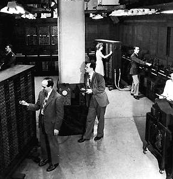
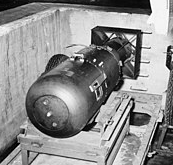
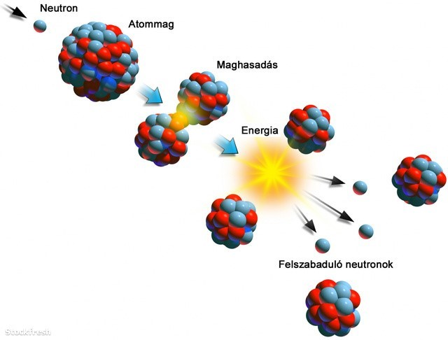

Amerika1930-ban meghívták vendégprofesszornak az Egyesült Államokba, a Princetoni Egyetemre. Hamarosan az ottani egyetem professzora lett (1930-1931), majd az újonnan megnyílt princetoni Institute for Advanced Studies professzora (1933–1955) – John von Neumann néven –, ahol a világ legkiválóbb tudósai gyűltek össze.


A második világháború idején addigi tevékenysége mellett – számos más természettudóshoz hasonlóan – ő is bekapcsolódott a haditechnikai kutatásokba. Rendszeresen járt Los Alamosba, ahol részt vett az első atombomba megépítésével kapcsolatos titkos programban, az előállítással kapcsolatos elméleti munkában.
Az 1930-as évek végétől érdeklődése egyre jobban az alkalmazott matematikai problémák felé fordult.


1951-től 1954-ig az Amerikai társaság elnöke volt. Megkapta az Egyesült Államok Érdemérmét (1954), amiért útjára indította a 20. század második felének informatikai forradalmát.
Az öttagú Atomenergia Bizottság (AEC) tagjává nevezték ki, amely akkor a legmagasabb szintű kormánymegbízatásnak számított egy tudós számára. Az atom- és hidrogénbombák kísérleti robbantásainál az ott keletkező lökéshullámok tanulmányozása során olyan bonyolult matematikai összefüggéseket fedezett fel, amelyek a klasszikus módszerekkel már nem voltak megoldhatók.
